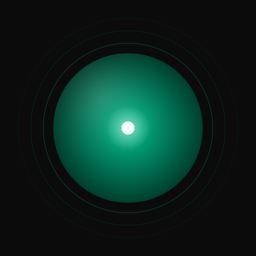

Blip
Tabata & HIIT timer for iPhone and Apple Watch
Quick answers
How do I start a workout?
Tap a workout. A 10-second “Get ready” countdown starts, then the screen turns green for work and red for rest. Tap Pause to take a break, or the X button to stop.
How do I create my own workout?
On iPhone tap New, set work, rest, rounds and get-ready time, then tap Save. Long-press your workout to edit or delete it. It also appears on your Apple Watch automatically.
Will I hear the cues if I lock my iPhone?
Yes, if you allow notifications: Blip keeps announcing phase changes on the lock screen with the matching sound. While Blip is open, the screen stays on. If you declined notifications, turn them on in Settings › Notifications › Blip.
Can I train without sound?
Yes. Blip’s cues play even in silent mode, so open Settings in Blip (gear icon) and turn Sound off. Haptics keep working. Other music only dips for a moment while a cue plays.
Does Blip work on Apple Watch without my iPhone?
Yes. Start any workout on the watch. It keeps running with your wrist down, shows your heart rate and calories, and saves the workout to Apple Health. The Quick Start complication starts your last workout from the watch face.
How do I do another round?
Tap Repeat on the completion screen to run the same workout again. On Apple Watch, tap the same workout in the list.
Where are my workouts saved?
Workouts started on Apple Watch are saved to Apple Health automatically, with an effort score estimated from your heart rate. On iPhone, tap Save to Apple Health on the completion screen, or turn on Save Automatically in Blip’s Settings.
Do I need an account or an internet connection?
No. Blip has no account, no ads and no in-app purchases, and it works fully offline.
What do I need to run Blip?
An iPhone with iOS 18 or later. The Apple Watch app needs watchOS 11 or later and is optional.
Questions or ideas? Write to us:
We usually reply within a couple of days.